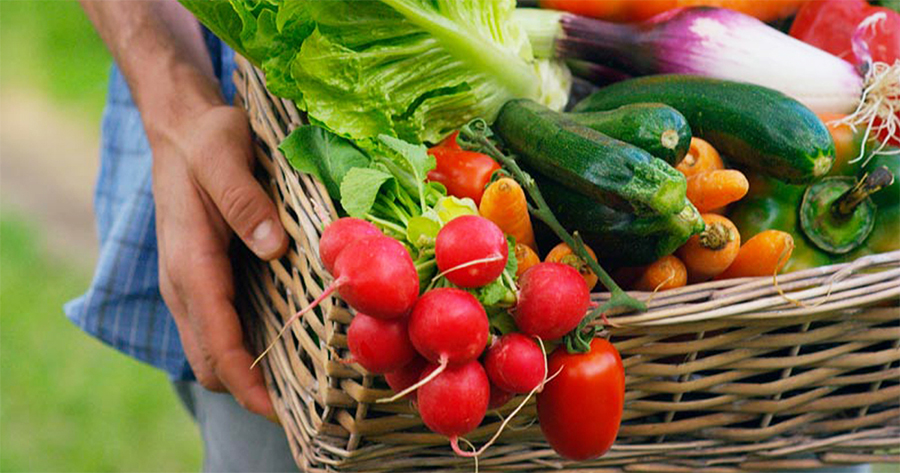
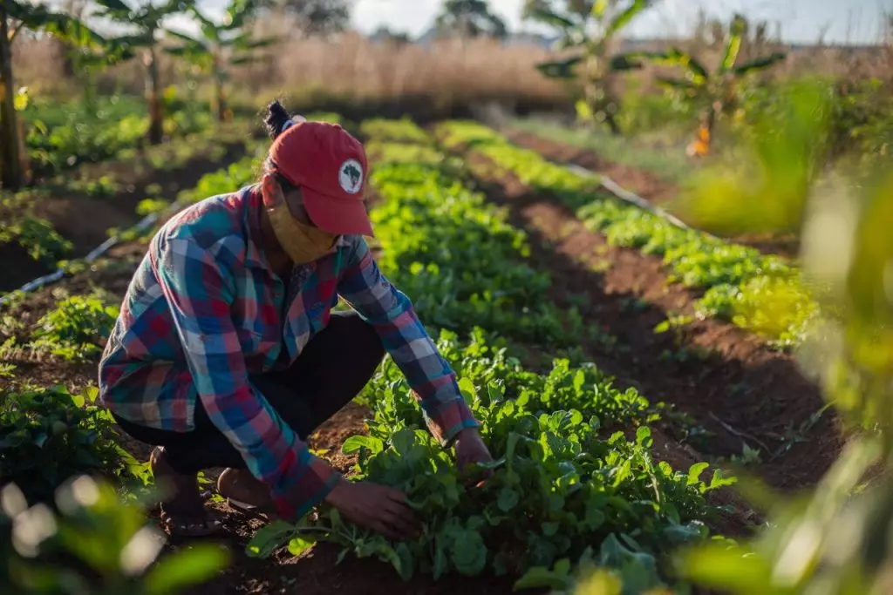
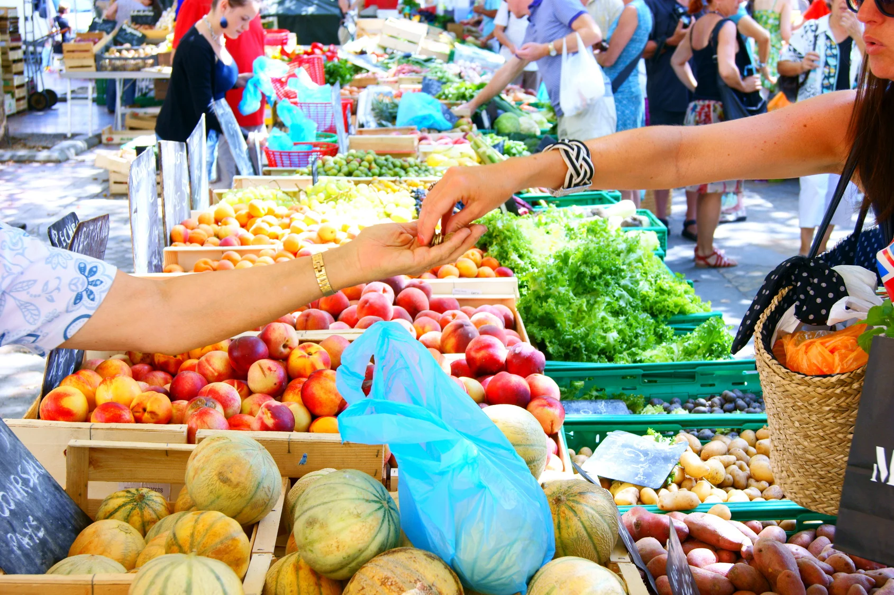

Sobre
A conexão entre o campo e a cidade é uma relação essencial para o desenvolvimento equilibrado da sociedade. Essa interação envolve o transporte de alimentos, o acesso à cultura, a troca de saberes e a valorização das diferenças.
Por que essa conexão é importante?
- Abastecimento: O campo fornece alimentos e matérias-primas para as cidades.  
- Desenvolvimento: A cidade oferece tecnologia e infraestrutura para o campo.A cidade fornece ao campo diversos recursos essenciais, incluindo: Recursos financeiros e tecnologia que ajudam no desenvolvimento agrícola. 1 Mercados consumidores para os produtos agrícolas, permitindo que os agricultores vendam suas colheitas. 1 Serviços e bens manufaturados que não são produzidos no campo, como equipamentos e insumos. 1 Essa relação de interdependência é crucial para a sobrevivência e o desenvolvimento tanto das áreas urbanas quanto rurais.
- Equilíbrio: Reduz o êxodo rural e melhora a qualidade de vida de ambos.
Exemplos de Integração
Feiras Orgânicas
Produtores rurais vendem diretamente seus produtos nas cidades.O setor agrícola é uma das principais fontes de emprego em nosso país, empregando apenas no ano passado, mais de 80 mil trabalhadores. Muito embora a agricultura e a produção rural sejam consideradas trabalhos relacionados, não há nenhuma dúvida de que existem importantes diferenças na forma como os agricultores e os produtores rurais desempenham suas funções. A agricultura possui um importante papel social, sendo responsável por fornecer alimento à humanidade desde que os seres humanos se tornaram nômades. A agricultura de subsistência é o trabalho mais comum entre os mais antigos agricultores, isto é, produzir alimentos para o próprio consumo. Produtores rurais, por outro lado, intitulados como proprietários de áreas delimitadas e que podem ou não engajar-se em atividades agrícolas. No entanto, estes também desempenham um papel específico na gestão. Não é só a produção em si que está relacionada a cada atividade, então é primordial analisar outros fatores para entender melhor os conceitos. Continue lendo e confira aqui algumas das diferenças entre agricultor e produtor rural!
Turismo Rural
Cidadãos conhecem e vivenciam a vida no campo.
Educação Compartilhada
Projetos escolares que integram saberes do campo e da cidade.